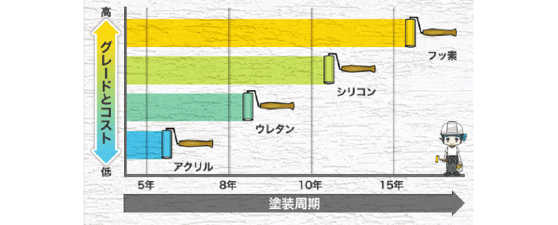
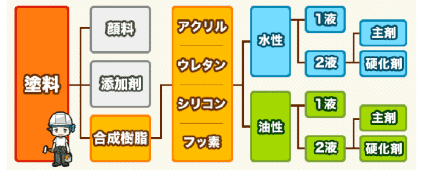
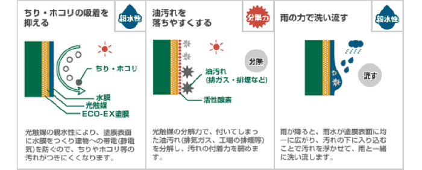
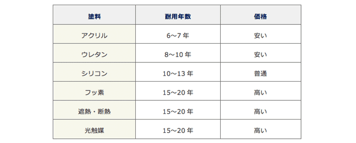
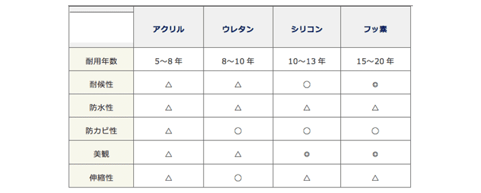

壁塗装の塗料の選び方
塗料を選ぶ時のポイント
1.塗替えのサイクルを考える
2.予算にあった塗料を選ぶ
3.自分の家の外壁材、屋根材に適した塗料を選ぶ
4.特殊な機能を持った塗料が必要か考える
使う塗料によって次回の塗り替え時期が変わってきます。
安い塗料を使うことで、工事1回の費用は抑えることができますが、
次回の工事までの間隔が狭くなり工事回数が増えてきます。
塗料の耐久性
お住いの地域の気候や太陽光の当たり方などによっても変わりますが、
塗料ごとの耐久年数はこのようになっています。

昔は安価なアクリルやウレタンが使われることが多かったですが、
今はシリコンが主流になっていて、フッ素を使う家庭も増えています。
シリコンの耐久年数は10～13年、フッ素の耐久年数は15～20年です。
早い家で10年や15年おきに塗替えが必要になるということですね。
通常は、外壁で使う塗料と屋根で使う塗料を統一し、
次回の塗替えが同じ時期になるようにしますが、直射日光や雨を浴びる屋根の劣化が早いので、
屋根に耐久性が高い塗料を使っても良いでしょう。。
水性か油性か

{kind=link}
塗料には「水性」と「油性」があります。
水性塗料は作業性に優れ、油性は耐久性に優れています。
昔の水性塗料は、耐久性が低かったため油性が主流でしたが、
塗料メーカーの技術向上により、
水性塗料が油性塗料と遜色が無い耐久性になっています。
最近は水性塗料が使われることが多くなっていますが、
寒い地域では油性が使われる事も多く、屋根や付帯部分も油性が使われることが多いです。
水性は水で希釈しますので臭いが少なく、人と環境に優しい塗料と言えますが、
油性塗料も臭いが少ない塗料用シンナーで希釈しますので、それほど臭いは気にならないはずです。
1液か2液か
塗料には1液型と2液型があります。
1液型は塗料液のみで、2液型は塗料液に硬化剤（樹脂）を混ぜて使うものです。
2液型は混合作業が手間になり、4～8時間で固まってしまうため使う分量だけ混ぜていきます。
硬化剤は化学反応しやすいため、酸素や水分と反応したり、高温や紫外線が当たる場所に置いておくと使えなくなってしまう可能性があります。
保管が難しく硬化不良のリスクもあるため、1液型を好む塗装業者も多いです。ただこれは、業者の都合なので、1液型、2液型のどちらを選んでも構いません。
一般的に、1液型よりも2液型の方が耐久性が高く価格も高くなります。
•シリコン1液型
•シリコン2液型
•フッ素2液型
一般的にはこの3つの種類から選ぶことになると思います。この中では、水性シリコン1液型が価格も安く塗りやすいです。塗りやすさは依頼する側には関係がないことですが、職人さんの腕が影響しづらい塗料と言えます。
耐久性や価格を考えて油性シリコン2液型を選択する人が多いようですが、依頼した業者から説明を受けて自分が良いと思ったものを選ぶようにしましょう。
触媒塗料の特徴
外壁塗装で使われる塗料は、アクリル、ウレタン、シリコン、フッ素などがありますが、
セルフクリーニング機能がある「光触媒塗料」が注目されています。
外壁塗装で使われる塗料の中には、特殊な機能を持ったものもあり、
それが「光触媒塗料」や「
遮熱・断熱塗料」です。
光触媒塗料の耐用年数は15～20年で、フッ素や遮熱・断熱塗料と同じく高い耐久性が魅力です。
塗料のみの平米単価は3,500円～5,500円で、他の塗料に比べるとかなり高額になります。
シリコンの2倍の金額です。
光触媒塗料の特徴
•耐久性が高い
•汚れが付きにくい
•セルフクリーニング機能がある
•カビや藻が発生しにくい
•防臭効果がある
•遮熱効果がある
•環境に優しい
•光が当たらない場所では効果を発揮できない
•雨水が当たらない場所では効果を発揮できない

光触媒の親水性により、チリやホコリが付きにくく、付いた汚れも光触媒が分解し、付着力を弱めます。汚れた浮いた状態になり、雨が降るとその汚れを雨水と一緒に洗い流してくれます。
光が当たらないと光触媒の分解力や親水性が発揮できないため、隣接する建物との距離が1メートル以下の場所では最大限の効果が発揮できません。また、雨水が当たりにくい場所でもセルフクリーニング機能が最大限発揮できません。
ただ、各メーカーともに、光が当たりにくい場所でも効果が発揮できるような塗料の開発を進めています。
新しい塗料で、まだまだ利用実績が少ないので、実際の所どれだけ魅力的な塗料なのかはわからない部分も多いです。 光触媒塗料を希望する場合は、塗装業者に良く確認して、他の塗料と見積もりを比較して決めるようにしましょう。
外壁塗料の特徴や性能
外壁や屋根の塗装で使われる塗料には、顔料、添加物、合成樹脂の3つが配合されていますが、
樹脂の種類により耐久性が変わってきます。
合成樹脂は、「アクリル、ウレタン、シリコン、フッ素」の4つに分けられ、
それぞれ水性塗料と油性塗料があり、さらに1液型と2液型に分かれます。
水性塗料は水で希釈し、油性塗料はシンナーで希釈します。
油性塗料は強溶剤と弱溶剤に分かれ、弱溶剤は塗料用シンナーで希釈するため、
それほど臭いはきつくありません。
一般住宅の外壁塗装や屋根塗装で使われる塗料で主流なのは、
コストパフォーマンスに優れたシリコン塗料ですが、価格重視でウレタン塗料が、
耐久性重視でフッ素塗料が選ばれることもあります。
塗料の耐用年数
耐用年数は、規定の希釈率で薄めた塗料を2回塗った場合の年数です。
外壁塗装では、下塗り ⇒ 中塗り ⇒ 上塗りの3回塗りが基本で、
中塗りと上塗りでこれらの塗料が使われます。
塗料の性能
アクリル、ウレタン、シリコン、フッ素で比べた場合、
フッ素塗料が最も高価で最も性能が高くなります。
アクリル塗料やウレタン塗料は価格が安いですが、
耐久性が低く性能も良くないため、あまり使われなくなっています。


リーフォーム事例
リメイク合同会社
-----------------------
TEL : 029-274-0220
FAX : 029-274-0220
ひたちなか市中根2283-3
-----------------------
TEL : 029-274-0220
FAX : 029-274-0220
ひたちなか市中根2283-3